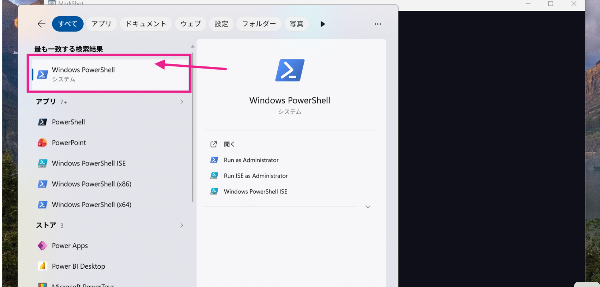
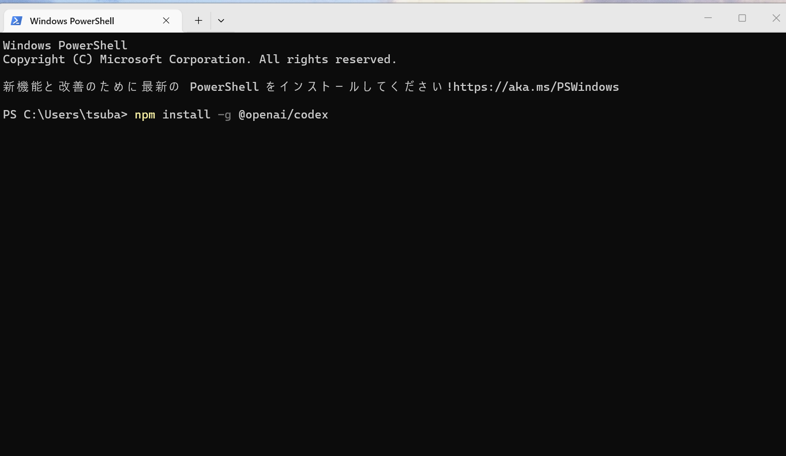
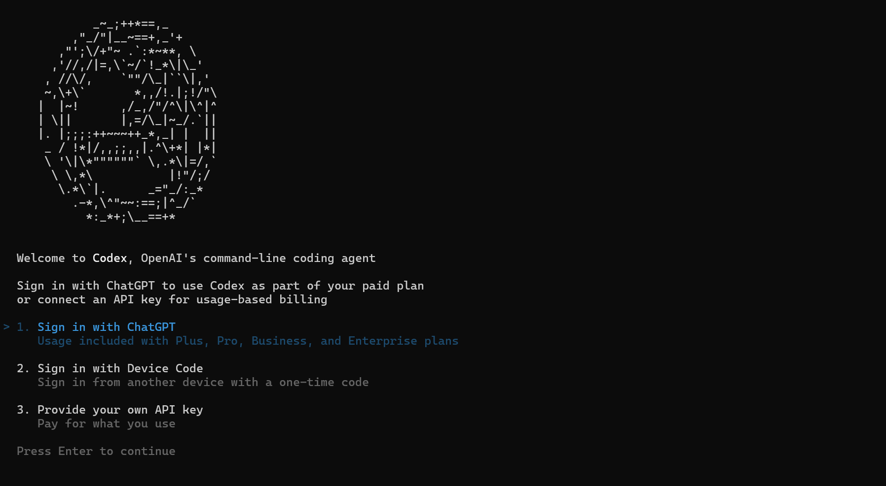
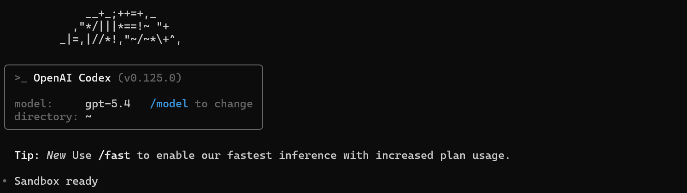

Windows PowerShellからCodexを初めて立ち上げる手順を、スクリーンショット付きで解説。
OpenAIのCLIコーディングエージェント「Codex」を、PowerShellから初めて立ち上げてみた。普段Claude Codeを使っているATH視点で、起動の流れと最初の画面を残しておく。
OpenAIが提供する、ターミナルで動くコーディング用AIエージェント。雑に言えば、Claude CodeのOpenAI版にあたる。プロンプトに自然言語で指示を書くと、ファイル操作やシェル実行を自律的にこなしてくれる。
Windowsキーを押して検索欄に「powershell」と入力すると、検索結果のトップに「Windows PowerShell」が出てくる。これを選んで起動する。

PowerShellが開いたら、npmでCodex CLIをグローバルインストールする。
npm install -g @openai/codex
事前にNode.js（LTS版）が入っていることが前提。インストールが終わったら、続けてcodexと打って起動する。
codex起動するとASCIIアートとともに「Welcome to Codex, OpenAI's command-line coding agent」が表示され、3つの認証方法から選ぶ画面になる。

ChatGPT有料プランを契約済みならば、迷わず1番でいい。Enterを押せばブラウザが開いて、ChatGPTでログインするだけで認証は終わる。
サインインに成功すると、Codexのプロンプトが立ち上がる。

model: gpt-5.4 — 使用モデル。/modelで切り替え可能directory: ~ — 起動時のカレントディレクトリTip: Use /fast to enable our fastest inference — /fastで高速推論モードSandbox ready — 作業可能状態あとはプロンプトに「このリポジトリのテストを通して」「READMEを要約して」のような指示を書けば、ファイル操作やシェル実行を含めて自律的に動いてくれる。Claude Codeを触ったことがある人なら、操作感はほぼ違和感なく入れる。
ターミナル型のAIエージェントは、Claude Code、GitHub Copilot CLI、そしてCodexと選択肢が一気に広がってきた。複数のエージェントを並走させる景色は、もはや当たり前の方向に進んでいる。
npm install -g @openai/codex → codexで起動